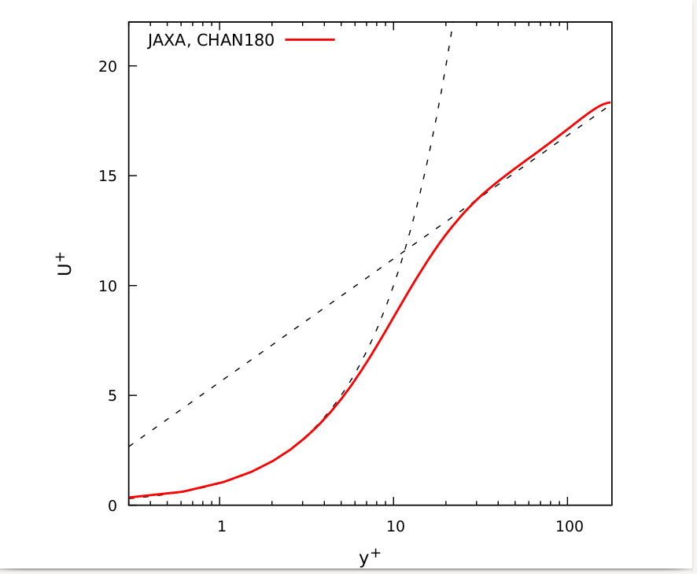
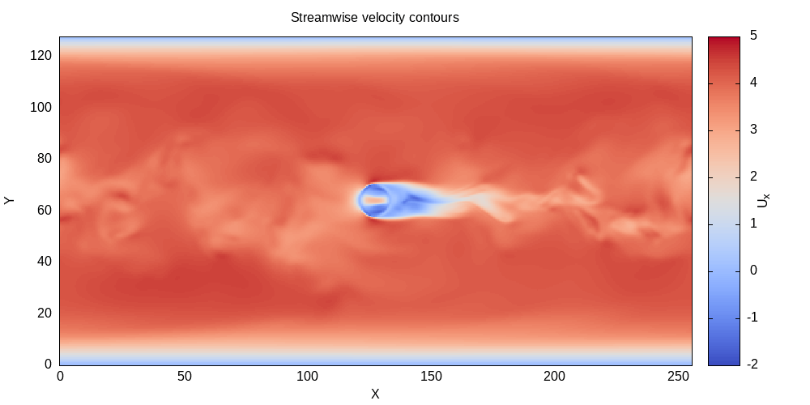

Gnuplot examples
Profile plots
Here averaged streamwise velocity from turbulent channel flow simulation is plotted in logarithmic scale at x.
Example files: log_plot.plt
JAXA1.dat
set terminal pdf size 11cm,9cm
set output "Ulog.pdf"
#set terminal png size 1100, 900
#set output "Ulog.png"
set xlabel "y^+" font ",12"
set ylabel "U^+" font ",12"
set tics font ",10"
set xrange [0.3:180]
set yrange [0:22]
set size square
set key top left font ",11"
set logscale x
set ytics nomirror
set bmargin 3
k=0.41
B=5.6
plot \
x with lines dashtype 2 lw 1 lc rgb "black" notitle ,\
1/k*log(x)+B with lines dashtype 2 lw 1 lc rgb "black" notitle ,\
"JAXA1.dat" using ($2):($3) with lines lw 2 lc rgb "red" title "JAXA, CHAN180"
An example output will be

Contour plots
This examples shows contour plot of a slice of channel flow, where a sphere is located in the center of the domain.
Example files: UVW.dat
moreland.pal
contour.plt
# Terminal type defines output format
# other options include 'svg', 'png', 'ps' etc.
set terminal pdf size 18cm, 9cm
set output "Contour.pdf"
unset key
set cblabel "U_x"
set xlabel "X"
set ylabel "Y"
# Other color styles are available as well
#load 'jet.pal'
load 'moreland.pal'
#load 'spectral.pal'
set xrange [0:256]
set yrange [0:128]
set title "Streamwise velocity contours"
# Plot data from the file 'c.dat', 1st and 3rd columns contain X, Y data,
# while 5th column contains required values, note, that 5th column is
# scaled and such airthmetics will require braces and dollar sign ($)
# before column number.
plot 'c.dat' using 1:3:($5/2) with image title "A"
An example output will be
